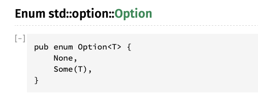

Arguments and Option and Result
Rust doesn’t have exceptions but there is a minimal runtime, which means if were not careful we can and will blow up at runtime. This is called a panic and is handled in the panic handler, which on hosted platforms includes unwinding and backtraces. You can fire it on purpose with panic!().
(starting from an empty main for just a second)
fn main() {
panic!("ded");
println!("Hello World");
}
EXERCISE: Run this program on your machine. Notice the program gets no further than the panic and nothing is printed.
thread 'main' panicked at 'ded', src/main.rs:4:5
note: run with `RUST_BACKTRACE=1` environment variable to display a backtrace
In Rust we try to program defensively and not let our users ever see messages like that.
We'll learn more about errors in a second, but let's take our arguments from the command line at runtime instead of hard coding them at compile time. Searching the standard library for args finds args come in as a iterator of a collection. We'll talk about iterators later, but for now we can for in loop over them, or use the nth() function to get a specific value.
use std::env; // explicit use (import) finally
fn main() {
println!("{:?}", env::args().nth(0));
println!("{:?}", env::args().nth(1));
println!("{:?}", env::args().nth(2));
}
EXERCISE: Run this program on your machine. We can't run this in the browser because we can't pass arguments to it.
NOTE: you can pass command line arguments around cargo and to your program with a double dash
cargo run -- valve.png valve_sobel.png
Some("target/debug/blah222")
Some("valve.png")
Some("valve_sobel.png")
Just like C style languages, the 0th argument is the name of the binary and the rest are your arguments. Hrm but did you notice we have this Some type wrapping our Strings...
The problem is the nth argument may or may not be there... This is the original sin of C style languages. They allowed null values in the language which, if not handled immediately, can sneak further into the program and cause crashes or corrupted data days weeks or months later.
Rust doesn’t have exceptions or pass error codes around, but rather uses the Result type which can be used to propagate either the error or the result and looks like this:

And Rust doesn't have Null but rather the Option type which can be used to propagate either a value (Some), or the lack of one (None) 
Were going to skip Result here for now, as our nth() method returns an Option, but they’re very similar in how they’re handled as they’re both implemented as enums.
In Rust we cant just have access to our values, we ofen need to unwrap() them to peel off the enum they come wrapped in.
use std::env;
fn main() {
println!("{:?}", env::args().nth(0).unwrap());
println!("{:?}", env::args().nth(1).unwrap());
println!("{:?}", env::args().nth(2).unwrap());
}
EXERCISE: Run this new program.
"target/debug/blah222"
"valve.png"
"valve_sobel.png"
No more Some() wrapping our strings.
EXERCISE: Run our program again, this time not passing any command line arguments.
thread 'main' panicked at 'called `Option::unwrap()` on a `None` value', src/libcore/option.rs:347:21
note: run with `RUST_BACKTRACE=1` environment variable to display a backtrace.
It may seem like were no better off than C style languages, but at least we crashed at the earliest possible opportunity. unwrap() is the most brute force way this can be done and is not ideal, but until we learn more its totally fine. The default error message isn't very useful to our users though so often well use .expect() instead of unwrap() in order to provide a better message.
use std::env;
fn main() {
println!("{:?}", env::args().nth(1).expect("You must pass an input file name as the first argument"));
println!("{:?}", env::args().nth(2).expect("You must pass an output file name as the second argument"));
}
EXERCISE: Run our program again, this time not passing the first and or second argument.
$ cargo run -- valve.png
Finished dev [unoptimized + debuginfo] target(s) in 0.01s
Running `target/debug/blah222 valve.png`
"valve.png"
thread 'main' panicked at 'You must pass an output file name as the second option to this program', src/main.rs:14:14
note: run with `RUST_BACKTRACE=1` environment variable to display a backtrace
$
There's definately command line argument parsing libraries that would do all this for us, a popular one is called Clap, but for now it is good to understand what is happening under the hood.
EXERCISE: Swap our hardcoded arguments from the previous page for our new command line arguments.
Next chapter we'll look at the Image library, and load up an image with our filenames.